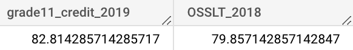

Thank you for visiting my website!
Ontario School Boards Progress/Achievement
The Case and Background Information
As a teacher it is impossible to not pull trends occurring in your class and extrapolate it, even though it is a small sample size. Oftentimes we don’t use data to check if our feelings are correct but I found an open source dataset from the Ontario government that looks at the school boards across Ontario and their reading EQAO/OSSLT for 2018/2019, four- and five-year graduation rates and compares progress in each category since 2017/2018. Interestingly, they do not include the math results (missing both grade 6 and 9). So I jumped on the opportunity to try to answer some questions I had.
Order of the report (you can jump to any part you want)
Questions
Analysis
Dashboard
Extension
Data
Questions
Question 1: What school board is the best at standardized testing, credit accumulation, and graduation rates?
-
Consistently the same school board should appear across all three categories; if not, this tells us there is something going on in either how standardized tests are being run or how schools are giving credits.
Question 2: Are there certain demographics that did better in 2018/2019 (referred to as 2019)?
-
Look at grade 6 vs 10 reading scores
-
Look at board type (Public vs Catholic) and language (English vs French)
Question 3: The general consensus is that progress and achievement is getting worse year by year. We can use this data to see if in fact there is a general pattern of decrease in progress since 2017/2018 (referred to as 2018). Are there certain grades/demographics that did the worse in comparison to 2017/2018?
-
Look at the average across EQAO progress variables (grade 6 and 10)
- for each school (plot each schools progress)
- Average the average: general, Catholic vs Public, English vs French
-
Look at average of progress in credit accumulation (grade 10 and 11)
- for each school (plot each schools progress)
- Average the average: general, Catholic vs Public, English vs French
-
Look at four year graduation rates
Question 4: Does a higher literacy test score indicate a potentially higher credit accumulation? In order to make sure we are following the same students, we need to compare the following metrics:
-
Checking to see if the same age group has similar credit accumulation year over year: Grade 10 credit accumulation 2018 compared to Grade 11 credit accumulation 2019
-
Grade 10 literacy to grade 10 credit accumulation
-
Grade 10 literacy 2018 to grade 11 credit accumulation 2019
-
Check correlation coefficients
-
Plot scatterplots
Question 5: How much does being on track in credits in grade 11 affect graduation rates?
- Grade 11 credit accumulation 2018 to four year grad rate 2019
- Check correlation coefficient
- Plot scatterplot
Question 6: Are there certain locational trends for school achievement?
- Plot by city
- Look at average of 2018 and 2019 for EQAO/OSSLT
*Note: for all questions I am not referring to the percentage of individual student but rather the percentage of students that passed the predefined features (e.g. grade 10 credit accumulation: percentage of students who have at least 16 credits by the end of grade 10, grade 10 OSSLT: percentage of students who passed the literacy test)
Analysis
Question 1) What school board is the best at standardized testing, credit accumulation, and graduation rates?
back to questions
Highest percentage of students passing the standardized test:
Highest credit accumulation:

Highest four year graduation rate:
As can be seen there is a different school board for each category. This implies more digging would need to be done; this would include looking on a more granular level such as schools within each school board. There could be certain schools that do either a really good job or a poor job in each category which would greatly change the average. The dashboard has an interactive tool that you can cross-reference which type of school boards you want to compare.
I compared the two different types cross referenced with the two different languages and I found that only for one combination did one school board become the best for all three categories. The York Region DSB was the only school board to appear across all three categories when the filters were for Public English school boards.
Question 2) Are there certain demographics that did better in 2018/2019 (referred to as 2019)?
back to questions
Note: For the purposes of this analysis, the number comparisons will be considered statistically significant: because each school board has a lot of students and we are looking at 72 school boards, this would give us a large “n” meaning that our standard error is very small.
Grade 6 reading scores tended to be better than grade 10, on average across all school boards. There is a significant difference of 3%. A couple of explanations: we are not preparing our students as well in grade 10 as we do in grade 6, or the standardized test is not as well structured for grade 11 as it is for grade 6.
For EQAO achievement, credit progress and graduation rates, the public board (compared to catholic) on average is lower for all for 2018/2019 by a substantial amount (close to 10%). The English board (compared to French) is also lower in all categories - by a substantial amount (10+%).
Further breakdown shows that the Public English schools perform the worst, while the French Catholic schools perform best.
It is interesting to note, for the Public board school the EQAO scores on avg are approximately the same as the credit accumulation rate. For the Catholic board, it seems like the EQAO scores were lower than the credit accumulation rate. One more very interesting finding is that the Public French board is the only one to have a higher four year grad rate compared to the credit accumulation rate (by over 5%). All other boards decreased by at least 1% up to 3%.
Conclusion:
- Grade 6 students performed better than grade 10 students
- French Catholic performed best in all categories
- English Public performed worst in all categories
Question 3) Are there certain grades/demographics that did the worse in comparison to 2017/2018?
back to questions
High level results
On average:
- Percentage of students passing standardized tests is worse (more than 0.5%)
- More credits granted (more than 1%)
- 4 year graduation rate is higher and 5 year is lower
Breakdown results
-
Percentage by standardized test category for 2018 and 2019

*Grade 10 OSSLT scores decreased quite a bit (almost 2%)
-
Progress increase/decrease from 2017/2018 to 2018/2019 for each category:
*We can see that the grade 6 EQAO has increased slightly, but the OSSLT grade 10 score has decreased by almost 2%.
*Both grade 10 and 11 credit accumulation rate has increased.
*The four year grad rate has also increased.
-
Breakdown by board type/language
-
Catholic/Public:
*Public board did worse than Catholic (similar to what was seen in 2019)
*Interesting to note: credits were on average given MORE often when OSSLT scores were LOWER. This could be because OSSLT evaluation is not a good coverage of material from curriculum or maybe school boards are more likely to give out credits or could be a mix of both.
*The Public board has a lot more people graduating, while the Catholic board did not change much year-over-year (even though the Catholic school board had high credit accumulation rates)
-
English/French:
*French board did worse than English on OSSLT
*The English boards tended to be more likely to give credits than the French boards
*English boards increased in credit accumulation even though a decrease in OSSLT progress, whereas the French board saw a decrease in credit accumulation. We would expect a decrease in OSSLT scores to lead to a decrease in grade 10 credit accumulation due to the OSSLT being given in grade 10
-
Cross type and language:
*All school boards did better on average for the grade 6 EQAO, except the English Catholic boards
*All school boards did worse on the grade 10 OSSLT (by a very large percentage 1.3 to 4.5%)
*Within the public board, English did better in the OSSLT than French and had more credits given (even though there was a decrease in score for OSSLT from previous year). The four year graduation progress was higher. Interesting to note is that the French EQAO scores were worse than 2017/2018 AND there was a decrease in credits given (as one would expect)
*Within the Catholic board, the English did better as well on OSSLT than French, and also gave more credits.
Overall the trend is opposite of what I would have expected; lower score but higher credit accumulation:
Conclusion:
From 2018 to 2019:
- Very slightly better grade 6 EQAO scores
- Worse grade 10 OSSLT scores
- Higher rates of credits given
- Higher rates of four year graduation
- Very slightly lower rates of five year graduation (due to more people graduating in four years)
- In general, Catholic better progress in EQAO/OSSLT scores and credit accumulation compared to than Public
- In general, English better progress in OSSLT scores and credit accumulation compared to than French
- The English boards tended to be more likely to give credits than the French boards
Question 4) Does a higher literacy test score indicate a potentially higher credit accumulation?
back to questions
Grade 10 credit accumulation (2018) to Grade 11 credit accumulation (2019)
Looking at the same group of students (grade 10 in 2018 then grade 11 in 2019), we can see, on average, more than 3.5% difference in credit accumulation for the same group of students year over year:
Meaning that more students reach the complete credit threshold by end of grade 11 (min. 23 credits) than the end of grade 10 credit threshold (min. 16 credits).
We also see a positive trend in the data, with some significant outliers. With the Pearson correlation coefficient being 0.69043059991308764, implying there is a moderate positive correlation between the percentage of students who get 16 or more credits by the end of grade 10 and the percentage of students who get 23 or more credits by the end of grade 11.
-
Outliers
Red circles: low grade 10 credit vs high grade 11 credit accumulation
- Renfrew County CDSB had a low percentage of students who had at least 16 credits by the end of grade 10 (49%) but a high percentage of students who had at least 23 credits by the end of grade 11 the following year (88%)
- Northeastern CDSB had a low percentage of students who had at least 16 credits by the end of grade 10 (59%) but a high percentage of students who had at least 23 credits by the end of grade 11 the following year (84%)
- Hastings & Prince Edward DSB had a low percentage of students who had at least 16 credits by the end of grade 10 (56%) but a higher percentage of students who had at least 23 credits by the end of grade 11 the following year (73%)
Green circle: high grade 10 credit vs low grade 11 credit accumulation
- CSDC des Aurores boreales had a high percentage of students who had at least 16 credits by the end of grade 10 (96%) but a lower percentage of students who had at least 23 credits by the end of grade 11 the following year (83%)
Grade 10 credit accumulation to OSSLT (2018)
For 2018, the average percentage of students to pass the OSSLT and get at least 16 credits by the end of grade 10 was very similar:
We also see a positive trend in the data, with only one major outlier. With the Pearson correlation coefficient being 0.62613743522943011, implying there is only a moderate positive correlation between the percentage of students who passed the literacy test in 2018 and the percentage of students who get 16 or more credits by the end of grade 10 in 2018.
-
Outliers
- Renfrew County DSB had a high percentage of students who passed the OSSLT (87%) but a low percentage of students who had at least 16 credits at the end of 2018 (49%)
Grade 10 credit accumulation to OSSLT (2019)
For 2019, the average percentage of students to pass the OSSLT and get at least 16 credits by the end of grade 10 was different by 2%:
We also see a slight positive trend in the data, with some significant outliers. With the Pearson correlation coefficient being 0.52517260306175906, implying there is a low to moderate positive correlation between the percentage of students who passed the OSSLT in 2019 and the percentage of students who got 16 or more credits by the end of grade 10 in 2019.
-
Outliers
Red circles: low OSSLT vs high grade 10 credit accumulation
- Superior-Greenstone DSB had a low percentage of students who passed the OSSLT (51%) but a higher percentage of students who had at least 16 credits at the end of 2019 (69%)
- Keewatin-Patricia DSB had a low percentage of students who passed the OSSLT (53%) but a higher percentage of students who had at least 16 credits at the end of grade 10 in 2019 (73%)
- Kenora CDSB had a low percentage of students who passed the OSSLT (66%) but a high percentage of students who had at least 16 credits at the end of 2019 (86%)
Green circle: high OSSLT vs low grade 10 credit accumulation
- Durham CDSB had a high percentage of students who passed the OSSLT (81%) but a low percentage of students who had at least 16 credits at the end of 2019 (58%)
- London District Catholic School Board had a high percentage of students who passed the OSSLT (80%) but a low percentage of students who had at least 16 credits at the end of 2019 (57%)
Out of curiosity, using the dashboard I looked into the different board type and language permutations of the 2018 and 2019 average of OSSLT and grade 10 credit accumulation. I found that the French Catholic School Boards had the opposite pattern of all other school boards: as the percentage of students who passed the OSSLT increased, the percentage of students who got at least 16 credits by the end of grade 10 actually decreased.
Here are the correlations I calculated
Overall: 0.674
French Catholic SBs: -0.792
English Catholic SBs: 0.221
French Public SBs: 0.783
English Public SBs: 0.696
OSSLT 2018 to grade 11 credit 2019
Looking at the same group of students (grade 10 OSSLT in 2018 then grade 11 credit accumulation in 2019), we can see, on average, about 3% difference for the same group of students year over year:

Meaning that more students reach the complete credit threshold by end of grade 11 (min. 23 credits) than the percentage of students who pass the literacy test (OSSLT).
We also see a positive trend in the data, with few outliers. With the Pearson correlation coefficient being 0.74480333233145657, implying there is a strong positive correlation between the percentage of students who pass the literacy test and the percentage of students who get 23 or more credits by the end of grade 11.
-
Outliers
Red circles: low OSSLT 2018 vs high grade 11 credit accumulation 2019
- Northeastern CDSB had a low percentage of students who passed the OSSLT (65%) but a high percentage of the same students who had at least 23 credits by the end of grade 11 the following year (84%)
- Keewatin-Patricia DSB had a low percentage of students who passed the OSSLT (59%) but a high percentage of the same students who had at least 23 credits by the end of grade 11 the following year(75%)
Conclusion:
- Being on track in regards to credits by the end of grade 10 is a slight indicator of being on track to having the correct number of credits by the end of grade 11
- There is a general pattern of the higher the percentage of students who pass the OSSLT, the higher the percentage of students who achieve at or above Grade 11 credit accumulation (23 or more credits)
-
Outliers
There seemed to be several schools that appeared in a couple instances of outliers.
- Renfrew County CDSB had a high percentage of students who passed the OSSLT and had at least 23 credits at the end of grade 11 but a low percentage of students who had at least 16 credits by the end of grade 10. This could be an indicator that there might be something wrong with the data point of grade 10 credit accumulation, or there could be something to check out about their process of grade 10 credits given.
- Northeastern CDSB had a low percentage of students passing the OSSLT and getting at least 16 credits by the end of grade 10 but a high percentage of students who had at least 23 credits by the end of grade 11. This could be an indicator of bad data or some more digging should be dug into how students are being given credits in grade 11.
- Keewatin-Patricia DSB seems to have a high percentage of students being on track for credits in grade 10 and 11 but a low percentage of students passing the OSSLT. It would be interesting to dig deeper into why their students are not doing better on the literacy test.
Question 5) How much does being on track in credits in grade 11 affect graduation rates?
back to questions
Based on the data we have, it would seem that the credit accumulation in grade 11 is a very good indicator of the four year graduation rate.
We can see that the percentage is fairly similar (off by less than 1%):
And we can see that it has a positive trend:
With a Pearson correlation coefficient of ~0.88.
There were two outliers:
- Renfrew County CDSB had a low percentage (47%) of students who had at least 23 credits by the end of grade 11 but a higher percentage (66.5%) of students who graduated within 4 years.
- DSB Ontario North East had a higher percentage (60%) of students who had at least 23 credits by the end of grade 11 but a lower percentage (53.4%) of students who graduated within 4 years.
Conclusion:
- Percentage of student on track with at least 23 credits by the end of grade 11 is a very good indicator of percentage of students who graduate within 4 years.
Question 6) Are there certain locational trends for school achievement?
back to questions
Looking at the standardized testing average (including years 2018 and 2019 for more data points) we can see that Ottawa and Toronto tend to do better than other cities. Usually the more rural a town is the more likely the school board has performed more poorly.
We saw that overall the grade 6 scores were better than grade 10, so looking at just a focus on the average grade 10 scores (2018 and 2019), we can see a similar trend as above holds.
Conclusion:
- Toronto and Ottawa school boards tended to perform better on standardized tests
Extensions
- Look at linear regression to quantify relationships between features in question 4 and 5. Use the linear regression to predict credit accumulation.
- Given more data: Average income for each city for the school boards, is there a correlation between income and achievement?
Data
Data downloaded from Ottawa open source. This data was originally collected from the Ontario Government using:
- the Education Quality and Accountability Office (EQAO) 2018-2019
- school boards in the Ontario School Information System (OnSIS) 2017-2018
- Class-size Tracker 2015-2016
Here are the variables and what they mean:
Grade_6_EQAO_Reading_Results: The 'Grade 6 Reading EQAO Result' indicator is the percentage of students who met or exceeded the provincial standard (levels 3 and 4) in the Grade 6 reading assessment out of the total number of eligible students for the reading assessment for 2018/2019.
Progress_in_Grade_6_EQAO_Reading_Results: The 'Progress in Grade 6 Reading EQAO Result' indicator is the percentage point increase or decrease since 2017-18 of Grade 6 students who met or exceeded the provincial reading standard (levels 3 and 4) out of the total number of students who fully participated in the assessment.
Grade_10_OSSLT_Results: The 'Grade 10 Literacy Test' indicator is the percentage of first-time eligible students who passed the OSSLT out of the total number of students who fully participated in the test for 2018/2019.
Progress_in_Grade_10_OSSLT_Results_: The 'Progress in Grade 10 Literacy Test' indicator is the percentage point increase or decrease since 2017-18 of first-time eligible students who passed the OSSLT out of the total number of students who fully participated in the test.
Credit_Accumulation_by_the_end_of_Grade_10: The 'Earning 16 or More Credits by the End of Grade 10' indicator is the percentage of students who accumulated 16 or more credits after two years of secondary school out of the total number of students who completed two years of secondary school for 2018/2019.
Progress_in_Credit_Accumulation_by_the_end_of_Grade_10: The 'Progress in Earning 16 or More Credits by the End of Grade 10' indicator is the percentage point increase or decrease since June of 2018 of students who accumulated 16 or more credits after two years of secondary school out of the total number of students who completed two years of secondary school.
Credit_Accumulation_by_the_end_of_Grade_11: The 'Earning 23 or More Credits by the End of Grade 11' indicator is the percentage of students who accumulated 23 or more credits after three years of secondary school out of the total number of students who completed three years of secondary school for 2018/2019.
Progress_in_Credit_Accumulation_by_the_end_of_Grade_11: The 'Progress in Earning 23 or More Credits by the End of Grade 11' indicator is the percentage point increase or decrease since June of 2018 of students who accumulated 23 or more credits after three years of secondary school out of the total number of students who completed three years of secondary school.
Primary_Class_Size_with_20_Students_or_less: No definition of what this represents. This percentage seems wrong, based on the class sizes I know for OCDSB. Could not find source of data, or other ways to access data.
Progress_in_Primary_Class_Size_with_20_Students_or_less: No definition of what this represents.
Four_Year_Graduation_Rate: A student is considered a four-year graduate if they receive an OSSD within four years of starting Grade 9 for 2019.
Progress_in_Four_Year_Graduation_Rate: is the percentage point increase or decrease since June of 2018.
Five_Year_Graduation_Rate: A student is considered a five-year graduate if they receive an OSSD within five years of starting Grade 9 for 2019.
Progress_in_Five_Year_Graduation_Rate: is the percentage point increase or decrease since June of 2018.
**Unsure if the five year grad includes the four year grads, or if it just includes the remaining people after the four year grads left. Also what about victory lap, when they did technically graduate but stayed for more courses?**
To note:
- There is no math EQAO score listed
- The data for primary class sizes does not seem correct, too high of a percentage, so this data was not used
- The five year graduation rate was not clear, so it was not used